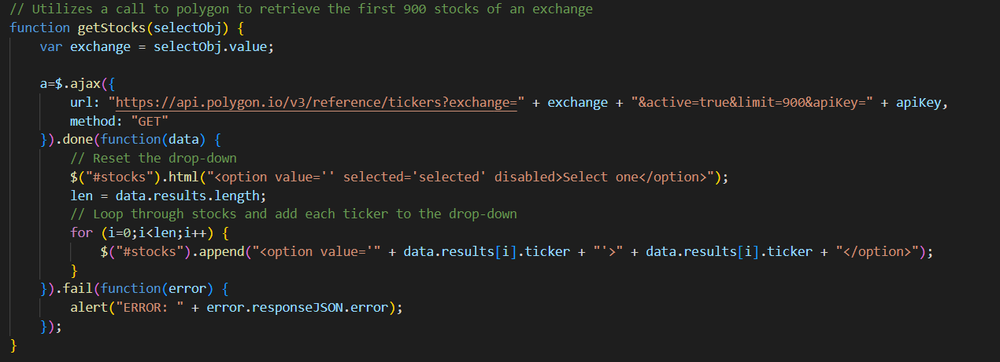
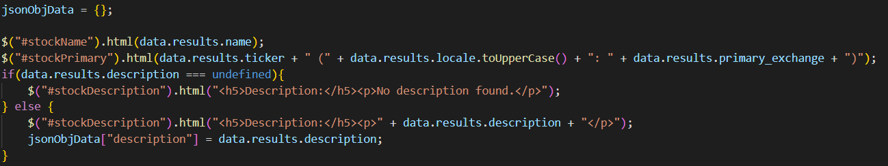
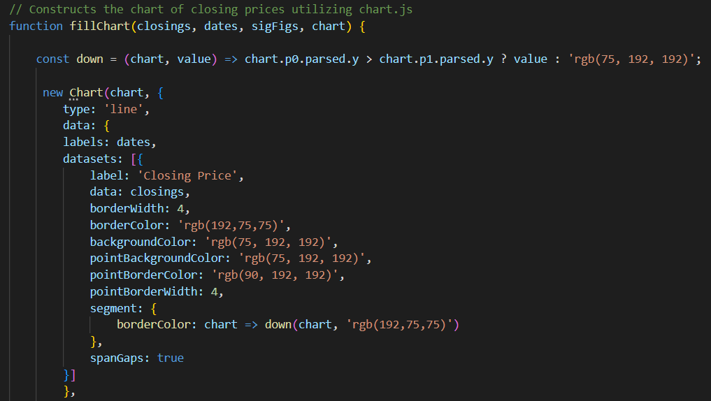
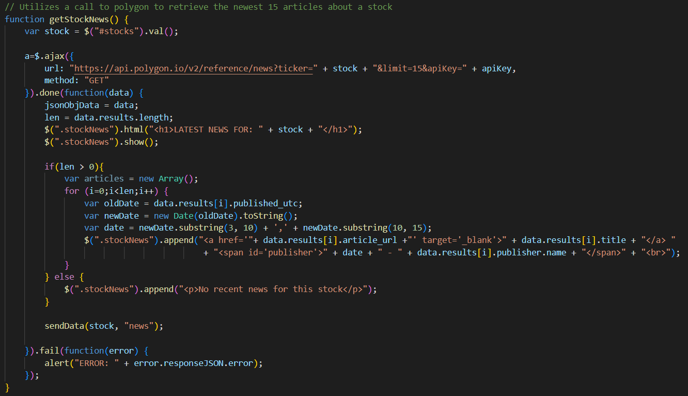
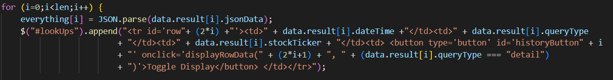
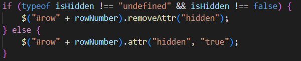

My name is Garrett Laverty. For CSE383 I created a 3 page website which allows a user to look-up stock information and then request history of requests made on a certain day.
After selecting a stock exchange, a call is done to polygon to retrieve the first 900 stocks on that exchange and populates the next dropdown with the results.
If the detail button is pressed, another call is done to polygon to retrieve details about the stock. That information is displayed by setting values as shown in the picture below. This information is also stored in an object that will be sent to the database used on the history tab.
An additional call is done get the closing prices of the past 7 days. This information is then sent to the "fillChart" method which uses chart.js to create a chart to display the data.
After selecting a stock exchange, a call is done to polygon to retrieve the first 900 stocks on that exchange and populates the next dropdown with the results.
If the news button is pressed, another call is done the polygon to retrieve recent news articles that relate to the selected stock. A for loop is used to loop through the results and add them to the correct location. This information is also stored in an object that will be sent to the database used on the history tab.
After selecting a day and max number of results, the "Get Results" button will become enabled. When pressed, a call to the database will be performed, and a for loop will be used to generate a table and add data to an array of results. All even rows will be populated with the date, type, and stock of a request. All odd rows will be hidden until the "toggle display" button of the previous row is pressed.
Then, the information in the array be used to display the information that was displayed when the original request was made, in the same manner as before with the only difference being that in this instace, no additional JSON object needs to be made, and the hidden attribute is removed.
